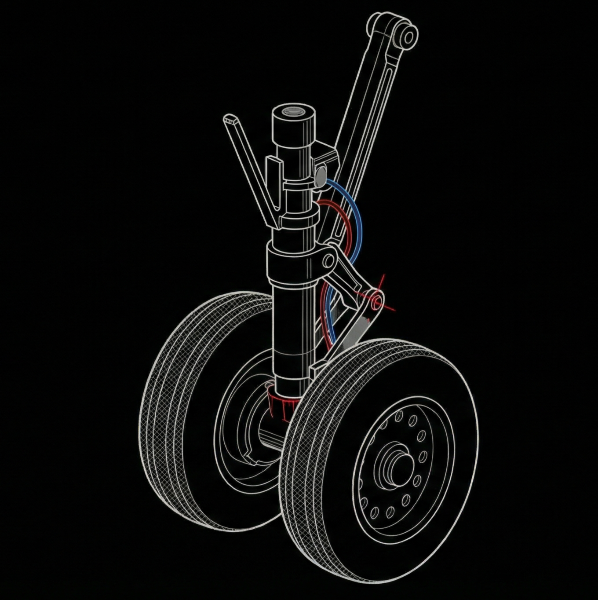

Landing Gear Analysis
Coursework (Team Project - Fall 2025)
Overview
Nose landing gear under a hard-landing case: define a clean load path, compute stresses, compare failure modes, then check the hand analysis with FEA.
What I Did
01 | System Simplification
ModelStrut as beam in bending/compression; axle as shaft under combined shear/bending via beam theory.
02 | Loading & Assumptions
LoadsConservative 3g impact with fixed trunnion support and wheel/axle point loads.
03 | Material Selection
MaterialsAl 7075-T6 strut and 4340 steel axle with tabulated allowables.
04 | Failure Criteria
SafetyVon Mises yield, pin/bolt shear, strut buckling checks, and component safety factors.
05 | FEA Validation
ANSYSANSYS check of peak stress locations, especially axle–strut interfaces and discontinuities.
Scope | Solid Mechanics
Simplified nose-gear assembly for coursework. Hand analysis first, FEA as a check that assumptions stayed conservative.
Load Path & Analysis Specs
Design / Analysis Constraints
Force Transmission
SUPPORT
TENSION
Tech Stack
Takeaway
Full nose-gear load-path analysis with component safety factors and ANSYS checks that kept hand assumptions conservative.